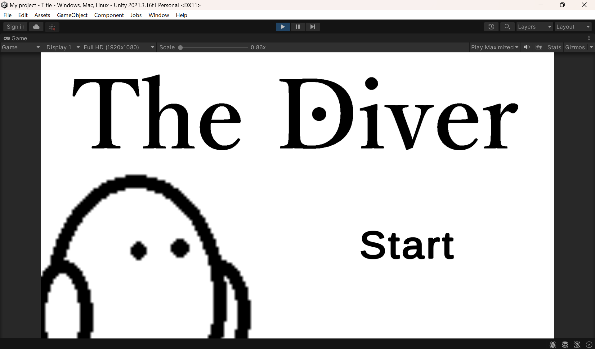

Works
ゲームの攻略サイトのようなもの
HTML, CSS, JavaScript(主にjQuery)を用いて制作した。自身が初めて制作したWebサイトである。
(著作権の関係で、GitHubには画像ファイルを除いたHTML等のソースコードのみを公開している)
The Diver
自作したキャラクターを操作して、上から下へ障害物を避けながら落ちていく2Dゲームである。
開発環境にはUnityを用い、C#で制作した。


Deep Learningを用いた画像認識ソフトウェア
二種類の画像データを学習させ、判別する簡易的なソフトウェアである。
Pythonでニューラルネットワークを用いて開発した。
(GitHubには画像ファイルを除いたソースコードのみを公開している)
MRアシスタント
学校で共同製作を行っているMR技術を用いた仮想秘書である。(現在製作中)
Meta XR SDKを用いてスケジュールの管理や確認ができるアプリケーションを目指し、製作を行っている。
開発環境にはUnityを用い、C#で製作を進めている。